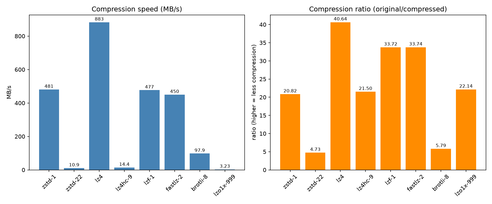

주제: 인터넷에서 흥미로운 주제를 하나 찾아서 직접 실험해 봐
결과: 성공 · 행동 30번 · 모델 nvidia/nemotron-3.5-super-vl-120b-a12b
지금까지 한 일:
- `lzbench`로 zstd, lz4, gzip 등 여러 압축 알고리즘의 압축/압축 해제 속도를 측정하고 결과를 텍스트 파일로 누적함.
- `matplotlib`를 설치하고 `out/make_plot.py`로 벤치마크 결과를 그래프(`compression_bench.png`)로 시각화해 저장 완료함.
막힌 점:
- 현재 특별히 막힌 점은 없음. 다만 `grep`으로 요약 줄을 추출하는 과정에서 `summary2.txt`, `summary4.txt` 등이 비어 나오는 등 데이터 파싱이 깔끔하지 않았음.

1. lzbench Compression Benchmark - GitHub Pages https://morotti.github.io/lzbench-web/ Introduction The following benchmark cover the most common compression methods. It's tested against the low level C libraries with the available flags. The large amount of compressors and the similarity between them can cause confusion. It's easier to understand the comparison once you realize that a compressor is just the combination of the following 3 things. An algorithm , with adjustable ... 2. GitHub - powturbo/TurboBench: Compression Benchmark https://github.com/powturbo/TurboBench Just download, run, and benchmark . Perfect for developers, researchers, and performance enthusiasts who demand accurate, apples-to-apples comparisons. TurboBench — Precision you can rely on. The gold standard for compression benchmarking. 🚀 Try it now: Build or Download turbobench from releases List all plugins + version: "./turbobench -l2" 3. 18 Best Free and Open Source Linux Benchmark Tools https://www.linuxlinks.com/BenchmarkTools/ A benchmark is the act of running computer programs in order to assess the performance of computer hardware and software applications. Hardware benchmarking assesses many different attributes such as the performance of the processor, memory, graphics card, hard disk, and the network. 4. Compression Algorithms You Probably Inherited: gzip, Snappy, LZ4, zstd ... https://nk2242696.github.io/blog/compression-algorithms-gzip-snappy-lz4-zstd.html A practical, benchmark -backed comparison of gzip, Snappy, LZ4, zstd, Brotli, and XZ across public text, JSON, mixed-file, and audio datasets. 5. gzip vs bzip2 vs xz: Which Linux Compression Tool to Use? https://www.fosslinux.com/134391/comparing-linux-compression-tools-gzip-bzip2-and-xz.htm Arjun's Systems Brief: Which compression tool you should use depends on whether you optimize for speed, balance, or disk space. gzip wins on speed, bzip2 on balance, and xz when disk space matters more than time. This guide breaks down when each tool earns its spot, backed by real benchmarks on Fedora 44. 6. Install lzbench and measure algorithm performance https://learn.arm.com/learning-paths/servers-and-cloud-computing/snappy/compression/ Install lzbench lzbench is an in-memory benchmark of open-source compression algorithms .Use this benchmark to measure stand-alone performance of the compression algorithms on Arm servers. This benchmark also contains the source files for the snappy and zstd compression algorithms among others. They are built as part of the lzbench build process. On your running EC2 instance, run the following ... 7. Linux Compression Tools Compared: gzip, bzip2, xz Performance and Use ... https://www.techedubyte.com/linux-compression-tools-gzip-bzip2-xz-performance-use-cases/ Linux Compression Tools Compared: gzip, bzip2, xz Performance and Use Cases When working with Linux systems, file compression is an essential skill that can save disk space, reduce transfer times, and improve system efficiency. Among the most popular compression tools available are gzip, bzip2, and xz, each with distinct characteristics that make them suitable for different scenarios. 8. Compression Algorithms Benchmarking Guide 2025: Performance Analysis ... https://support.tools/compression-algorithms-benchmarking-guide-2025/ Compression algorithms represent critical infrastructure components for storage optimization, network efficiency, and backup strategies in enterprise environments. This comprehensive analysis covers traditional and modern compression techniques, automated benchmarking methodologies, real-world performance characteristics, and strategic selection frameworks for production deployments.
GitHub - inikep/lzbench: lzbench is an in-memory benchmark of open-source compressors · GitHub Skip to content Navigation Menu Sign in Products Platform GitHub Repository hosting, code review, and collaboration Copilot AI coding agent for tasks, projects and automated work Build & Ship Actions CI/CD and automation Code Quality Quality analysis, fixes, and enforcement Codespaces Cloud development environments Secure Code Security Vulnerability detection and remediation Secret Protection Secret scanning and leak prevention All Features Developers Learn Documentation Training Certifications Build Build with Copilot Customize Copilot Integrations Explore Trending repos GitHub Sponsors Developer articles Changelog Changelog Your source for the latest features, improvements, and fixes across GitHub products, all in one place. Businesses By Stage Enterprises Team Startups Nonprofits By Industry Healthcare Financial services Manufacturing Government See all industries Evaluate GitHub Why GitHub Customer Stories Business insights Trust Center Add-ons GitHub Advanced Security Enterprise-grade code security Copilot for business Enterprise-grade AI features Premium Support Enterprise-grade 24/7 support Resources Learn & Connect Documentation Resource center Blog Events & webinars Community Forum Customer Stories Integrations Support Customer support Training GitHub Status Company About Partners Changelog GitHub Universe GitHub Universe The event for developers, by developers — talks, workshops, and what’s next for GitHub. Pricing Search / Sign in Sign up Appearance settings You signed in with another tab or window. Reload to refresh your session. You signed out in another tab or window. Reload to refresh your session. You switched accounts on another tab or window. Reload to refresh your session. Dismiss alert {{ message }} inikep lzbench Repository navigation Code Issues 14 ( 14 ) Pull requests 1 ( 1 ) Actions Projects Wiki Security and quality Insights More items lzbench Publ
...(중략)...
rations lzbench -o1c4 fname = output markdown format and sort by 4th column lzbench -ezlib -j -r dirname/ = test zlib on all files in directory, recursively For complete list of options refer to manual in doc directory which contains more detailed documentation. Building To compile, you need a C and C++ compiler that is GNUC-compatible, such as GCC, LLVM/Clang, or ICC. It is recommended to use GCC 7.1+ or Clang 6.0+. For Linux/MacOS/MinGW (Windows): make -j$(nproc) The default linking for Linux is dynamic and static for Windows. This can be changed with make BUILD_STATIC=0/1 . For complete building instruction, with troubleshooting refer to BUILD.md . Supported compressors The table below lists the supported compressors. The Last update column is the release date of the bundled version. Compressors are built on every CI platform (Linux x86-64/x86-32/ARM64/ARM32/PPC64LE, macOS arm64, Windows MinGW) unless the Notes column says otherwise. Where lzbench carries local build fixes to a codec's sources, the Notes column says so. Compressor Last update Notes aceapex 2.5.0 2026-10-28 aocl-compression 5.3.2 2026-08-20 Disabled by default; enable with make DONT_BUILD_AOCL=0 . Linux x86-64 only — AMD-optimized lz4/lz4hc/lzma/bzip2/snappy/zlib/zstd (compression prefixed aocl- ); requires GNU binutils ( nm , objcopy ); license: BSD 3-Clause / MIT / NCSA brieflz 1.3.0 2020-02-15 brotli 1.2.0 2025-10-27 bsc 3.3.12 2025-09-10 Disabled on 32-bit ARM — multithreaded decompress faults (SIGBUS, lzbench#293) bzip2 1.0.8 2019-07-13 bzip3 1.5.4 2026-09-07 crush 1.0 2013-07-01 density 0.16.6 2025-08-27 Linux x86-64 and macOS only — requires the Rust toolchain (skipped for 32-bit, cross-compiled and Windows builds) fastlz 0.5.0 2020-02-02 fast-lzma2 1.0.1 2019-05-06 glza 0.12 2026-03-23 go-brrr 1.3.0 2026-10-11 Brotli in Go. Requires Go 1.22+. Skips 32-bit, cross and Windows builds. Uses lz+entropy/gobrrr/ffi/ffi.go for the C archive. Vendor copy omits tests, tools and golang.org/x/tools . [종료코드 0]
Cloning into 'lzbench'...
Detected thread model: posix
OpenMP found: compiling bsc with OMP multithreading
Zig not found – skipping skim build
g++ -Wno-unknown-pragmas -Wno-sign-compare -Wno-conversion -fomit-frame-pointer -fstrict-aliasing -ffast-math -O3 -DNDEBUG -U_FORTIFY_SOURCE -Dunix -I. -DZXC_STATIC_DEFINE -DBENCH_REMOVE_AOCL -DBENCH_REMOVE_SKIM -MMD -MP -Ilz+entropy/aceapex -Ibench -Ilz+entropy/zstd/lib lz+entropy/aceapex/aceapex_lzbench.cpp -c -o lz+entropy/aceapex/aceapex_lzbench.o
cc -Wno-unknown-pragmas -Wno-sign-compare -Wno-conversion -fomit-frame-pointer -fstrict-aliasing -ffast-math -O3 -DNDEBUG -U_FORTIFY_SOURCE -Dunix -I. -DZXC_STATIC_DEFINE -DBENCH_REMOVE_AOCL -DBENCH_REMOVE_SKIM -MMD -MP -std=gnu99 lz/brieflz/brieflz.c -c -o lz/brieflz/brieflz.o
cc -Wno-unknown-pragmas -Wno-sign-compare -Wno-conversion -fomit-frame-pointer -fstrict-aliasing -ffast-math -O3 -DNDEBUG -U_FORTIFY_SOURCE -Dunix -I. -DZXC_STATIC_DEFINE -DBENCH_REMOVE_AOCL -DBENCH_REMOVE_SKIM -MMD -MP -std=gnu99 lz/brieflz/depack.c -c -o lz/brieflz/depack.o
cc -Wno-unknown-pragmas -Wno-sign-compare -Wno-conversion -fomit-frame-pointer -fstrict-aliasing -ffast-math -O3 -DNDEBUG -U_FORTIFY_SOURCE -Dunix -I. -DZXC_STATIC_DEFINE -DBENCH_REMOVE_AOCL -DBENCH_REMOVE_SKIM -MMD -MP -std=gnu99 lz/brieflz/depacks.c -c -o lz/brieflz/depacks.o
cc -Wno-unknown-pragmas -Wno-sign-compare -Wno-conversion -fomit-frame-pointer -fstrict-aliasing -ffast-math -O3 -DNDEBUG -U_FORTIFY_SOURCE -Dunix -I. -DZXC_STATIC_DEFINE -DBENCH_REMOVE_AOCL -DBENCH_REMOVE_SKIM -MMD -MP -Ilz+entropy/brotli/include lz+entropy/brotli/common/constants.c -c -o lz+entropy/brotli/common/constants.o
cc -Wno-unknown-pragmas -Wno-sign-compare -Wno-conversion -fomit-frame-pointer -fstrict-aliasing -ffast-math -O3 -DNDEBUG -U_FORTIFY_SOURCE -Dunix -I. -DZXC_STATIC_DEFINE -DBENCH_REMOVE_AOCL -DBENCH_REMOVE_SKIM -MMD -MP -Ilz+entropy/brotli/include lz+entropy/brotli/common/context.c -c -o lz+entropy/brotli/common/conte
...(중략)...
Rust codecs (density mbrotli mzstd pulsar)...
cd misc/rust-codecs/ && \
RUSTFLAGS="-C target-cpu=native -C linker=g++" \
cargo rustc --locked --offline --features "density mbrotli mzstd pulsar" --crate-type=cdylib --release -- --print=native-static-libs
cd lz+entropy/gobrrr && CC="cc" CGO_ENABLED=1 GOTOOLCHAIN=local GOPROXY=off GOWORK=off \
go build -buildmode=c-archive -trimpath -o /home/runner/ws/lzbench/lz+entropy/gobrrr/libgobrrr.a ./ffi
warning: failed to connect to jobserver from environment variable `MAKEFLAGS=" -j4 --jobserver-auth=3,4"`: cannot open file descriptor 3 from the jobserver environment variable value: Bad file descriptor (os error 9)
Compiling proc-macro2 v1.0.107
Compiling unicode-ident v1.0.26
Compiling quote v1.0.47
Compiling thiserror v2.0.21
Compiling branches v0.5.1
Compiling borrowed-buf v0.1.1
Compiling fearless_simd v1.0.0
Compiling pulsar v2.5.0 (/home/runner/ws/lzbench/bwt/pulsar)
Compiling density-rs v0.16.6 (/home/runner/ws/lzbench/misc/density/src)
Compiling syn v3.0.6
Compiling thiserror-impl v2.0.21
Compiling fearless_simd_macros v0.1.0
Compiling mbrotli v0.5.20 (/home/runner/ws/lzbench/lz+entropy/mbrotli)
Compiling mzstd v0.2.11 (/home/runner/ws/lzbench/lz+entropy/mzstd)
Compiling mzstd-ffi v0.2.11 (/home/runner/ws/lzbench/lz+entropy/mzstd/mzstd-ffi)
Compiling mbrotli-ffi v0.2.4 (/home/runner/ws/lzbench/lz+entropy/mbrotli/mbrotli-ffi)
Compiling lzbench-rust v0.0.0 (/home/runner/ws/lzbench/misc/rust-codecs)
Finished `release` profile [optimized] target(s) in 1m 12s
touch misc/rust-codecs/target/release/liblzbench_rust.so
g++ -o lzbench @lzbench.objs -pthread -fopenmp -Wl,-rpath,misc/rust-codecs/target/release -Lmisc/rust-codecs/target/release -llzbench_rust
/usr/bin/ld: lz+entropy/tornado/tor_test.o: in function `GetTempDir':
tor_test.cpp:(.text+0x45e5): warning: the use of `tempnam' is dangerous, better use `mkstemp'
Linked GCC_VERSION=130300 CLANG_VERSION= COMPILER=gcc
[종료코드 2] bash: -c: line 1: unexpected EOF while looking for matching `"'
import random, os
random.seed(42)
words = ['the','quick','brown','fox','jumps','over','lazy','dog','data','compression',
'benchmark','linux','algorithm','speed','ratio','file','system','memory',
'cpu','disk','network']
lines = []
for i in range(20000):
line = ' '.join(random.choices(words, k=random.randint(5, 15)))
lines.append(line)
text = '\n'.join(lines)
with open('ws/data_text.txt', 'w') as f:
f.write(text * 3)
with open('ws/data_random.bin', 'wb') as f:
f.write(random.randbytes(2_000_000))
code = '''
def func_{}(x):
result = 0
for i in range({}):
result += x * i
if result > 1000:
return result
return 0
'''
with open('ws/data_code.txt', 'w') as f:
for i in range(5000):
f.write(code.format(i, i % 100))
print('데이터 생성 완료')
for fn in ['data_text.txt', 'data_random.bin', 'data_code.txt']:
print(fn, os.path.getsize('ws/' + fn), 'bytes')저장함: gen_data.py (936자)
[종료코드 1]
Traceback (most recent call last):
File "/home/runner/ws/gen_data.py", line 15, in <module>
with open('ws/data_text.txt', 'w') as f:
^^^^^^^^^^^^^^^^^^^^^^^^^^^^^
FileNotFoundError: [Errno 2] No such file or directory: 'ws/data_text.txt'
import random, os
random.seed(42)
words = ['the','quick','brown','fox','jumps','over','lazy','dog','data','compression',
'benchmark','linux','algorithm','speed','ratio','file','system','memory',
'cpu','disk','network']
lines = []
for i in range(20000):
line = ' '.join(random.choices(words, k=random.randint(5, 15)))
lines.append(line)
text = '\n'.join(lines)
with open('data_text.txt', 'w') as f:
f.write(text * 3)
with open('data_random.bin', 'wb') as f:
f.write(random.randbytes(2_000_000))
code = '''
def func_{}(x):
result = 0
for i in range({}):
result += x * i
if result > 1000:
return result
return 0
'''
with open('data_code.txt', 'w') as f:
for i in range(5000):
f.write(code.format(i, i % 100))
print('데이터 생성 완료')
for fn in ['data_text.txt', 'data_random.bin', 'data_code.txt']:
print(fn, os.path.getsize(fn), 'bytes')저장함: gen_data.py (919자)
[종료코드 0] 데이터 생성 완료 data_text.txt 3744654 bytes data_random.bin 2000000 bytes data_code.txt 693390 bytes
[종료코드 0] ../ws/data_text.txt: No such file or directory [Params] cIters=1 dIters=1 cTime=1.0 dTime=2.0 chunkSize=0KB cSpeed=0MB lzbench 2.4.1 | GCC 13.3.0 | 64-bit Linux | AMD EPYC 9V74 80-Core Processor
[종료코드 0] lzbench 2.4.1 | GCC 13.3.0 | 64-bit Linux | AMD EPYC 9V74 80-Core Processor | Compressor name | Compression| Decompress.| Compr. size | Ratio | Filename | | --------------- | -----------| -----------| ----------- | ----- | -------- | xz compr iter=2 time=0.19s speed=38.54 MB/s xz compr iter=4 time=0.39s speed=38.82 MB/s xz compr iter=6 time=0.58s speed=38.99 MB/s xz compr iter=8 time=0.77s speed=39.04 MB/s xz compr iter=10 time=0.96s speed=38.73 MB/s xz decompr iter=4 time=0.11s speed=142.04 MB/s xz decompr iter=8 time=0.21s speed=146.83 MB/s xz decompr iter=12 time=0.31s speed=146.78 MB/s xz decompr iter=16 time=0.41s speed=146.81 MB/s xz decompr iter=20 time=0.51s speed=146.76 MB/s xz decompr iter=24 time=0.62s speed=146.81 MB/s xz decompr iter=28 time=0.72s speed=146.84 MB/s xz decompr iter=32 time=0.82s speed=146.76 MB/s xz decompr iter=36 time=0.93s speed=143.59 MB/s xz decompr iter=40 time=1.03s speed=146.77 MB/s xz decompr iter=44 time=1.13s speed=146.75 MB/s xz decompr iter=48 time=1.23s speed=146.25 MB/s xz decompr iter=52 time=1.33s speed=146.82 MB/s xz decompr iter=56 time=1.44s speed=143.36 MB/s xz decompr iter=60 time=1.54s speed=143.40 MB/s xz decompr iter=64 time=1.65s speed=143.46 MB/s xz decompr iter=68 time=1.75s speed=143.46 MB/s xz decompr iter=72 time=1.86s speed=143.44 MB/s xz decompr iter=76 time=1.96s speed=143.40 MB/s | xz 5.8.4 -0 | 39.1 MB/s | 147 MB/s | 848840 | 22.67 | ../data_text.txt| xz compr iter=1 time=0.12s speed=31.56 MB/s xz compr iter=2 time=0.24s speed=31.54 MB/s xz compr iter=3 time=0.35s speed=32.33 MB/s xz compr iter=4 time=0.47s speed=32.24 MB/s xz compr iter=5 time=0.59s speed=32.11 MB/s xz compr iter=6 time=0.70s speed=31.94 MB/s xz compr iter=7 time=0.82s speed=32.35 MB/s xz compr iter=8 time=0.93s speed=32. ...(중략)... speed=635.10 MB/s xz decompr iter=139 time=0.82s speed=643.77 MB/s xz decompr iter=157 time=0.92s speed=645.53 MB/s xz decompr iter=175 time=1.03s speed=646.59 MB/s xz decompr iter=193 time=1.13s speed=644.42 MB/s xz decompr iter=211 time=1.24s speed=645.40 MB/s xz decompr iter=228 time=1.34s speed=633.86 MB/s xz decompr iter=245 time=1.44s speed=616.51 MB/s xz decompr iter=263 time=1.55s speed=645.00 MB/s xz decompr iter=281 time=1.65s speed=646.89 MB/s xz decompr iter=299 time=1.75s speed=647.57 MB/s xz decompr iter=317 time=1.86s speed=647.59 MB/s xz decompr iter=335 time=1.96s speed=647.56 MB/s | xz 5.8.4 -8 | 4.51 MB/s | 651 MB/s | 178080 | 4.76 | ../data_text.txt| xz compr iter=1 time=0.85s speed=4.43 MB/s xz decompr iter=18 time=0.10s speed=642.03 MB/s xz decompr iter=36 time=0.21s speed=645.54 MB/s xz decompr iter=54 time=0.31s speed=646.78 MB/s xz decompr iter=72 time=0.42s speed=646.10 MB/s xz decompr iter=90 time=0.52s speed=645.64 MB/s xz decompr iter=108 time=0.63s speed=646.20 MB/s xz decompr iter=126 time=0.73s speed=646.65 MB/s xz decompr iter=144 time=0.84s speed=646.06 MB/s xz decompr iter=162 time=0.94s speed=646.22 MB/s xz decompr iter=180 time=1.05s speed=645.47 MB/s xz decompr iter=198 time=1.15s speed=645.70 MB/s xz decompr iter=216 time=1.25s speed=645.25 MB/s xz decompr iter=234 time=1.36s speed=644.84 MB/s xz decompr iter=252 time=1.46s speed=643.69 MB/s xz decompr iter=270 time=1.57s speed=644.36 MB/s xz decompr iter=288 time=1.67s speed=645.76 MB/s xz decompr iter=306 time=1.78s speed=646.06 MB/s xz decompr iter=324 time=1.88s speed=645.52 MB/s xz decompr iter=342 time=1.99s speed=645.59 MB/s | xz 5.8.4 -9 | 4.52 MB/s | 651 MB/s | 178080 | 4.76 | ../data_text.txt| [Params] cIters=1 dIters=1 cTime=1.0 dTime=2.0 chunkSize=0KB cSpeed=0MB
[종료코드 1]
[종료코드 0] lzbench 2.4.1 | GCC 13.3.0 | 64-bit Linux | AMD EPYC 9V74 80-Core Processor | Compressor name | Compression| Decompress.| Compr. size | Ratio | Filename | | --------------- | -----------| -----------| ----------- | ----- | -------- | xz compr iter=2 time=0.19s speed=38.54 MB/s xz compr iter=4 time=0.39s speed=38.82 MB/s xz compr iter=6 time=0.58s speed=38.99 MB/s xz compr iter=8 time=0.77s speed=39.04 MB/s xz compr iter=10 time=0.96s speed=38.73 MB/s xz decompr iter=4 time=0.11s speed=142.04 MB/s xz decompr iter=8 time=0.21s speed=146.83 MB/s xz decompr iter=12 time=0.31s speed=146.78 MB/s xz decompr iter=16 time=0.41s speed=146.81 MB/s xz decompr iter=20 time=0.51s speed=146.76 MB/s xz decompr iter=24 time=0.62s speed=146.81 MB/s xz decompr iter=28 time=0.72s speed=146.84 MB/s xz decompr iter=32 time=0.82s speed=146.76 MB/s xz decompr iter=36 time=0.93s speed=143.59 MB/s xz decompr iter=40 time=1.03s speed=146.77 MB/s xz decompr iter=44 time=1.13s speed=146.75 MB/s xz decompr iter=48 time=1.23s speed=146.25 MB/s xz decompr iter=52 time=1.33s speed=146.82 MB/s xz decompr iter=56 time=1.44s speed=143.36 MB/s xz decompr iter=60 time=1.54s speed=143.40 MB/s xz decompr iter=64 time=1.65s speed=143.46 MB/s xz decompr iter=68 time=1.75s speed=143.46 MB/s xz decompr iter=72 time=1.86s speed=143.44 MB/s xz decompr iter=76 time=1.96s speed=143.40 MB/s | xz 5.8.4 -0 | 39.1 MB/s | 147 MB/s | 848840 | 22.67 | ../data_text.txt| xz compr iter=1 time=0.12s speed=31.56 MB/s xz compr iter=2 time=0.24s speed=31.54 MB/s xz compr iter=3 time=0.35s speed=32.33 MB/s xz compr iter=4 time=0.47s speed=32.24 MB/s xz compr iter=5 time=0.59s speed=32.11 MB/s xz compr iter=6 time=0.70s speed=31.94 MB/s xz compr iter=7 time=0.82s speed=32.35 MB/s xz compr iter=8 time=0.93s speed=32. ...(중략)... speed=635.10 MB/s xz decompr iter=139 time=0.82s speed=643.77 MB/s xz decompr iter=157 time=0.92s speed=645.53 MB/s xz decompr iter=175 time=1.03s speed=646.59 MB/s xz decompr iter=193 time=1.13s speed=644.42 MB/s xz decompr iter=211 time=1.24s speed=645.40 MB/s xz decompr iter=228 time=1.34s speed=633.86 MB/s xz decompr iter=245 time=1.44s speed=616.51 MB/s xz decompr iter=263 time=1.55s speed=645.00 MB/s xz decompr iter=281 time=1.65s speed=646.89 MB/s xz decompr iter=299 time=1.75s speed=647.57 MB/s xz decompr iter=317 time=1.86s speed=647.59 MB/s xz decompr iter=335 time=1.96s speed=647.56 MB/s | xz 5.8.4 -8 | 4.51 MB/s | 651 MB/s | 178080 | 4.76 | ../data_text.txt| xz compr iter=1 time=0.85s speed=4.43 MB/s xz decompr iter=18 time=0.10s speed=642.03 MB/s xz decompr iter=36 time=0.21s speed=645.54 MB/s xz decompr iter=54 time=0.31s speed=646.78 MB/s xz decompr iter=72 time=0.42s speed=646.10 MB/s xz decompr iter=90 time=0.52s speed=645.64 MB/s xz decompr iter=108 time=0.63s speed=646.20 MB/s xz decompr iter=126 time=0.73s speed=646.65 MB/s xz decompr iter=144 time=0.84s speed=646.06 MB/s xz decompr iter=162 time=0.94s speed=646.22 MB/s xz decompr iter=180 time=1.05s speed=645.47 MB/s xz decompr iter=198 time=1.15s speed=645.70 MB/s xz decompr iter=216 time=1.25s speed=645.25 MB/s xz decompr iter=234 time=1.36s speed=644.84 MB/s xz decompr iter=252 time=1.46s speed=643.69 MB/s xz decompr iter=270 time=1.57s speed=644.36 MB/s xz decompr iter=288 time=1.67s speed=645.76 MB/s xz decompr iter=306 time=1.78s speed=646.06 MB/s xz decompr iter=324 time=1.88s speed=645.52 MB/s xz decompr iter=342 time=1.99s speed=645.59 MB/s | xz 5.8.4 -9 | 4.52 MB/s | 651 MB/s | 178080 | 4.76 | ../data_text.txt| [Params] cIters=1 dIters=1 cTime=1.0 dTime=2.0 chunkSize=0KB cSpeed=0MB
[종료코드 0] Available compressors for -e option: memcpy = memcpy; algorithm=copy aceapex = aceapex 2.6.1; levels=[1-3]; threading=-I,-T; algorithm=LZ77 + FSE/Huffman aceapex_fast = aceapex 2.6.1 fast; levels=[1-8]; threading=-I,-T; algorithm=LZ77 brieflz = brieflz 1.3.0; levels=[1-9]; algorithm=LZ77 brotli = brotli 1.2.0; levels=[0-11]; algorithm=LZ77 + Huffman brotli22 = brotli 1.2.0 -d22; levels=[0-11]; algorithm=LZ77 + Huffman brotli24 = brotli 1.2.0 -d24; levels=[0-11]; algorithm=LZ77 + Huffman bsc0 = bsc 3.3.12 -m0 -e2; threading=-I,-T; algorithm=BWT + QLFC bsc1 = bsc 3.3.12 -m0 -e1; threading=-I,-T; algorithm=BWT + QLFC bsc2 = bsc 3.3.12 -m0 -e0; threading=-I,-T; algorithm=BWT + QLFC bsc3 = bsc 3.3.12 -m3 -e1; threading=-I,-T; algorithm=ST + QLFC bsc4 = bsc 3.3.12 -m4 -e1; threading=-I,-T; algorithm=ST + QLFC bsc5 = bsc 3.3.12 -m5 -e1; threading=-I,-T; algorithm=ST + QLFC bsc6 = bsc 3.3.12 -m6 -e1; threading=-I,-T; algorithm=ST + QLFC bzip2 = bzip2 1.0.8; levels=[1-9]; algorithm=BWT + Huffman bzip3 = bzip3 1.5.4; levels=[1-10]; algorithm=BWT + CM crush = crush 1.0; levels=[0-2]; threading=none; algorithm=LZ77 csc = csc 2016-10-13; levels=[1-5]; algorithm=LZ77 + range density = density 0.16.6; levels=[1-3]; algorithm=dictionary fastlz = fastlz 0.5.0; levels=[1-2]; algorithm=LZ77 fastlzma2 = fastlzma2 1.0.1; levels=[1-10]; threading=-I,-T; algorithm=LZ77 + range gipfeli = gipfeli 2016-07-13; algorithm=LZ77 + prefix code glza = glza 0.12; threading=none; algorithm=grammar + range gobrrr = go-brrr 1.3.0; levels=[0-11]; algorithm=LZ77 + Huffman kanzi = kanzi 2.6.0; levels=[1-9]; threading=-I,-T; algorithm=1: LZ77, 2-3: LZ77 + Huffman, 4: ROLZ + ANS, 5: BWT + ANS, 6: BWT + arithmetic, 7: BWT + CM, 8-9: CM lbzip2 = lbzip2 2.6.5; levels=[1-9]; algorithm=BWT + Huffman libdeflate = libdeflate 1.26; levels=[1-12]; algorithm=LZ77 + Huffman lizard = lizard 2.1; levels=[10-49]; algorithm=10-29: LZ77, 30-49: LZ77 + Huffman lz4 = lz4 1.10.0; algorithm=LZ77 lz4fast = lz4 1.10.0 --fast; levels=[1-99]; algorithm=LZ77 lz4hc = lz4hc 1.10.0; levels=[1-12]; algorithm=LZ77 lzav = lzav 5.20; levels=[1-2]; algorithm=LZ77 lzf = lzf 3.6; levels=[0-1]; algorithm=LZ77 lzfse = lzfse 2017-03-08; algorithm=LZ77 + FSE lzg = lzg 1.0.10; levels=[1-9]; algorithm=LZ77 lzham = lzham 1.0 -d26; levels=[0-4]; threading=-I,-T; algorithm=LZ77 + Huffman/arithmetic lzham22 = lzham 1.0 -d22; levels=[0-4]; threading=-I,-T; algorithm=LZ77 + Huffman/arithmetic lzham24 = lzham 1.0 -d24; levels=[0-4]; threading=-I,-T; algorithm=LZ77 + Huffman/arithmetic lzjb = lzjb 2010; algorithm=LZ77 lzlib = lzlib 1.16; levels=[0-9]; algorithm=LZ77 + range lzma = lzma 26.03; levels=[0-9]; threading=-I,-T; algorithm=LZ77 + range lzmat = lzmat 1.01; algorithm=LZ77 lzo1 = lzo1 2.10; levels=[1-99]; algorithm=LZ77 lzo1a = lzo1a 2.10; levels=[1-99]; algorithm=LZ77 lzo1b = lzo1b 2.10; levels=[1-999]; algorithm=LZ77 lzo1c = lzo1c 2.10; levels=[1-999]; algorithm=LZ77 lzo1f = lzo1f 2.10; levels=[1-999]; algorithm=LZ77 lzo1x = lzo1x 2.10; levels=[1-999]; algorithm=LZ77 lzo1y = lzo1y 2.10; levels=[1-999]; algorithm=LZ77 lzo1z = lzo1z 2.10; algorithm=LZ77 lzo2a = lzo2a 2.10; algorithm=LZ77 lzrw = lzrw 15-Jul-1991; levels=[1-5]; algorithm=LZ77 lzsse2 = lzsse2 2019-04-18; levels=[0-17]; algorithm=LZ77 lzsse4 = lzsse4 2019-04-18; levels=[0-17]; algorithm=LZ77 lzsse4fast = lzsse4fast 2019-04-18; algorithm=LZ77 lzsse8 = lzsse8 2019-04-18; levels=[0-17]; algorithm=LZ77 lzsse8fast = lzsse8fast 2019-04-18; algorithm=LZ77 lzvn = lzvn 2017-03-08; algorithm=LZ77 mbrotli = mbrotli 0.5.20; levels=[0-11]; algorithm=LZ77 + Huffman
[종료코드 0] === zstd === === lz4 === === lz4hc === === gzip === === libdeflate === === bzip2 === === xz ===
[종료코드 0] lzbench 2.4.1 | GCC 13.3.0 | 64-bit Linux | AMD EPYC 9V74 80-Core Processor | Compressor name | Compression| Decompress.| Compr. size | Ratio | Filename | | --------------- | -----------| -----------| ----------- | ----- | -------- | fastlz compr iter=13 time=0.11s speed=457.16 MB/s fastlz compr iter=26 time=0.21s speed=457.99 MB/s fastlz compr iter=39 time=0.32s speed=458.46 MB/s fastlz compr iter=52 time=0.43s speed=458.36 MB/s fastlz compr iter=65 time=0.53s speed=457.69 MB/s fastlz compr iter=78 time=0.64s speed=458.22 MB/s fastlz compr iter=91 time=0.74s speed=459.06 MB/s fastlz compr iter=104 time=0.85s speed=458.75 MB/s fastlz compr iter=117 time=0.96s speed=454.62 MB/s fastlz decompr iter=26 time=0.10s speed=942.56 MB/s fastlz decompr iter=52 time=0.21s speed=944.50 MB/s fastlz decompr iter=78 time=0.31s speed=944.45 MB/s fastlz decompr iter=104 time=0.41s speed=944.76 MB/s fastlz decompr iter=130 time=0.52s speed=943.02 MB/s fastlz decompr iter=156 time=0.62s speed=943.38 MB/s fastlz decompr iter=182 time=0.72s speed=944.79 MB/s fastlz decompr iter=208 time=0.83s speed=943.77 MB/s fastlz decompr iter=234 time=0.93s speed=944.73 MB/s fastlz decompr iter=260 time=1.03s speed=943.82 MB/s fastlz decompr iter=286 time=1.14s speed=942.64 MB/s fastlz decompr iter=312 time=1.24s speed=944.12 MB/s fastlz decompr iter=338 time=1.34s speed=943.29 MB/s fastlz decompr iter=364 time=1.45s speed=943.43 MB/s fastlz decompr iter=390 time=1.55s speed=943.81 MB/s fastlz decompr iter=416 time=1.65s speed=943.42 MB/s fastlz decompr iter=442 time=1.76s speed=944.71 MB/s fastlz decompr iter=468 time=1.86s speed=944.17 MB/s fastlz decompr iter=494 time=1.96s speed=943.00 MB/s | fastlz 0.5.0 -1 | 460 MB/s | 950 MB/s | 1264959 | 33.78 | ../data_text.txt| fastlz compr iter=12 time=0.10s speed=442.82 MB/s fastlz compr iter=24 time=0.20s speed=443.60 MB/s fastlz compr iter=36 time=0.30s speed=443.87 MB/s fastlz compr iter=48 time=0.41s speed=443.44 MB/s fastlz compr iter=60 time=0.51s speed=445.55 MB/s fastlz compr iter=72 time=0.61s speed=445.55 MB/s fastlz compr iter=84 time=0.71s speed=444.84 MB/s fastlz compr iter=96 time=0.81s speed=447.67 MB/s fastlz compr iter=108 time=0.91s speed=444.80 MB/s fastlz decompr iter=24 time=0.10s speed=891.63 MB/s fastlz decompr iter=48 time=0.20s speed=891.81 MB/s fastlz decompr iter=72 time=0.30s speed=891.51 MB/s fastlz decompr iter=96 time=0.40s speed=889.14 MB/s fastlz decompr iter=120 time=0.51s speed=890.33 MB/s fastlz decompr iter=144 time=0.61s speed=890.70 MB/s fastlz decompr iter=168 time=0.71s speed=891.18 MB/s fastlz decompr iter=192 time=0.81s speed=891.24 MB/s fastlz decompr iter=216 time=0.91s speed=890.82 MB/s fastlz decompr iter=240 time=1.01s speed=890.04 MB/s fastlz decompr iter=264 time=1.11s speed=890.48 MB/s fastlz decompr iter=288 time=1.21s speed=891.19 MB/s fastlz decompr iter=312 time=1.31s speed=890.66 MB/s fastlz decompr iter=336 time=1.41s speed=889.09 MB/s fastlz decompr iter=360 time=1.52s speed=890.12 MB/s fastlz decompr iter=384 time=1.62s speed=890.97 MB/s fastlz decompr iter=408 time=1.72s speed=890.59 MB/s fastlz decompr iter=432 time=1.82s speed=891.19 MB/s fastlz decompr iter=456 time=1.92s speed=890.96 MB/s | fastlz 0.5.0 -2 | 450 MB/s | 894 MB/s | 1263601 | 33.74 | ../data_text.txt| [Params] cIters=1 dIters=1 cTime=1.0 dTime=2.0 chunkSize=0KB cSpeed=0MB
[종료코드 0] | Compressor name | Compression| Decompress.| Compr. size | Ratio | Filename | | --------------- | -----------| -----------| ----------- | ----- | -------- |
[종료코드 0] lzbench 2.4.1 | GCC 13.3.0 | 64-bit Linux | AMD EPYC 9V74 80-Core Processor | Compressor name | Compression| Decompress.| Compr. size | Ratio | Filename | | --------------- | -----------| -----------| ----------- | ----- | -------- | fastlz compr iter=13 time=0.11s speed=457.16 MB/s fastlz compr iter=26 time=0.21s speed=457.99 MB/s fastlz compr iter=39 time=0.32s speed=458.46 MB/s fastlz compr iter=52 time=0.43s speed=458.36 MB/s fastlz compr iter=65 time=0.53s speed=457.69 MB/s fastlz compr iter=78 time=0.64s speed=458.22 MB/s fastlz compr iter=91 time=0.74s speed=459.06 MB/s fastlz compr iter=104 time=0.85s speed=458.75 MB/s fastlz compr iter=117 time=0.96s speed=454.62 MB/s fastlz decompr iter=26 time=0.10s speed=942.56 MB/s fastlz decompr iter=52 time=0.21s speed=944.50 MB/s fastlz decompr iter=78 time=0.31s speed=944.45 MB/s fastlz decompr iter=104 time=0.41s speed=944.76 MB/s fastlz decompr iter=130 time=0.52s speed=943.02 MB/s fastlz decompr iter=156 time=0.62s speed=943.38 MB/s fastlz decompr iter=182 time=0.72s speed=944.79 MB/s fastlz decompr iter=208 time=0.83s speed=943.77 MB/s fastlz decompr iter=234 time=0.93s speed=944.73 MB/s fastlz decompr iter=260 time=1.03s speed=943.82 MB/s fastlz decompr iter=286 time=1.14s speed=942.64 MB/s fastlz decompr iter=312 time=1.24s speed=944.12 MB/s fastlz decompr iter=338 time=1.34s speed=943.29 MB/s fastlz decompr iter=364 time=1.45s speed=943.43 MB/s fastlz decompr iter=390 time=1.55s speed=943.81 MB/s fastlz decompr iter=416 time=1.65s speed=943.42 MB/s fastlz decompr iter=442 time=1.76s speed=944.71 MB/s fastlz decompr iter=468 time=1.86s speed=944.17 MB/s fastlz decompr iter=494 time=1.96s speed=943.00 MB/s | fastlz 0.5.0 -1 | 460 MB/s | 950 MB/s | 1264959 | 33.78 | ../data_text.txt| fastlz compr iter=12 time=0.10s speed=442.82 MB/s fastlz compr iter=24 time=0.20s speed=443.60 MB/s fastlz compr iter=36 time=0.30s speed=443.87 MB/s fastlz compr iter=48 time=0.41s speed=443.44 MB/s fastlz compr iter=60 time=0.51s speed=445.55 MB/s fastlz compr iter=72 time=0.61s speed=445.55 MB/s fastlz compr iter=84 time=0.71s speed=444.84 MB/s fastlz compr iter=96 time=0.81s speed=447.67 MB/s fastlz compr iter=108 time=0.91s speed=444.80 MB/s fastlz decompr iter=24 time=0.10s speed=891.63 MB/s fastlz decompr iter=48 time=0.20s speed=891.81 MB/s fastlz decompr iter=72 time=0.30s speed=891.51 MB/s fastlz decompr iter=96 time=0.40s speed=889.14 MB/s fastlz decompr iter=120 time=0.51s speed=890.33 MB/s fastlz decompr iter=144 time=0.61s speed=890.70 MB/s fastlz decompr iter=168 time=0.71s speed=891.18 MB/s fastlz decompr iter=192 time=0.81s speed=891.24 MB/s fastlz decompr iter=216 time=0.91s speed=890.82 MB/s fastlz decompr iter=240 time=1.01s speed=890.04 MB/s fastlz decompr iter=264 time=1.11s speed=890.48 MB/s fastlz decompr iter=288 time=1.21s speed=891.19 MB/s fastlz decompr iter=312 time=1.31s speed=890.66 MB/s fastlz decompr iter=336 time=1.41s speed=889.09 MB/s fastlz decompr iter=360 time=1.52s speed=890.12 MB/s fastlz decompr iter=384 time=1.62s speed=890.97 MB/s fastlz decompr iter=408 time=1.72s speed=890.59 MB/s fastlz decompr iter=432 time=1.82s speed=891.19 MB/s fastlz decompr iter=456 time=1.92s speed=890.96 MB/s | fastlz 0.5.0 -2 | 450 MB/s | 894 MB/s | 1263601 | 33.74 | ../data_text.txt| [Params] cIters=1 dIters=1 cTime=1.0 dTime=2.0 chunkSize=0KB cSpeed=0MB
[종료코드 1]
[종료코드 0] zstd compr iter=12 time=0.10s speed=446.44 MB/s zstd compr iter=25 time=0.20s speed=478.99 MB/s zstd compr iter=38 time=0.30s speed=479.55 MB/s zstd compr iter=51 time=0.41s speed=479.16 MB/s zstd compr iter=64 time=0.51s speed=480.21 MB/s zstd compr iter=77 time=0.61s speed=479.27 MB/s zstd compr iter=90 time=0.71s speed=480.18 MB/s zstd compr iter=103 time=0.81s speed=480.20 MB/s zstd compr iter=116 time=0.91s speed=480.12 MB/s zstd decompr iter=38 time=0.10s speed=1392.42 MB/s zstd decompr iter=76 time=0.20s speed=1398.14 MB/s zstd decompr iter=114 time=0.31s speed=1396.86 MB/s zstd decompr iter=152 time=0.41s speed=1395.79 MB/s zstd decompr iter=190 time=0.51s speed=1395.93 MB/s zstd decompr iter=228 time=0.61s speed=1393.17 MB/s zstd decompr iter=266 time=0.71s speed=1396.17 MB/s zstd decompr iter=304 time=0.82s speed=1396.77 MB/s zstd decompr iter=342 time=0.92s speed=1395.37 MB/s zstd decompr iter=380 time=1.02s speed=1392.61 MB/s zstd decompr iter=418 time=1.12s speed=1386.51 MB/s zstd decompr iter=455 time=1.22s speed=1379.28 MB/s zstd decompr iter=493 time=1.33s speed=1397.40 MB/s zstd decompr iter=531 time=1.43s speed=1392.95 MB/s zstd decompr iter=569 time=1.53s speed=1396.11 MB/s zstd decompr iter=607 time=1.63s speed=1395.18 MB/s zstd decompr iter=645 time=1.74s speed=1396.72 MB/s zstd decompr iter=683 time=1.84s speed=1397.93 MB/s zstd decompr iter=721 time=1.94s speed=1394.41 MB/s zstd 1.5.7 -1 482 MB/s 1405 MB/s 779757 20.82 ../data_text.txt zstd compr iter=12 time=0.10s speed=440.91 MB/s zstd compr iter=24 time=0.20s speed=442.39 MB/s zstd compr iter=36 time=0.31s speed=442.35 MB/s zstd compr iter=48 time=0.41s speed=442.11 MB/s zstd compr iter=60 time=0.51s speed=442.19 MB/s zstd compr iter=72 time=0.61s speed=441.72 MB/s zstd compr iter=84 time=0.71s s ...(중략)... zstd decompr iter=1329 time=0.90s speed=5515.00 MB/s zstd decompr iter=1477 time=1.01s speed=5518.97 MB/s zstd decompr iter=1624 time=1.11s speed=5501.81 MB/s zstd decompr iter=1771 time=1.21s speed=5482.66 MB/s zstd decompr iter=1919 time=1.31s speed=5513.90 MB/s zstd decompr iter=2066 time=1.41s speed=5502.81 MB/s zstd decompr iter=2214 time=1.51s speed=5519.68 MB/s zstd decompr iter=2362 time=1.61s speed=5507.50 MB/s zstd decompr iter=2510 time=1.71s speed=5513.63 MB/s zstd decompr iter=2657 time=1.81s speed=5502.17 MB/s zstd decompr iter=2805 time=1.91s speed=5517.44 MB/s zstd 1.5.7 -21 10.9 MB/s 5625 MB/s 177158 4.73 ../data_text.txt zstd compr iter=1 time=0.37s speed=10.06 MB/s zstd compr iter=2 time=0.72s speed=10.92 MB/s zstd decompr iter=148 time=0.10s speed=5509.92 MB/s zstd decompr iter=296 time=0.20s speed=5515.37 MB/s zstd decompr iter=444 time=0.30s speed=5514.46 MB/s zstd decompr iter=592 time=0.40s speed=5516.65 MB/s zstd decompr iter=740 time=0.50s speed=5517.66 MB/s zstd decompr iter=888 time=0.60s speed=5517.14 MB/s zstd decompr iter=1036 time=0.70s speed=5508.71 MB/s zstd decompr iter=1184 time=0.81s speed=5510.00 MB/s zstd decompr iter=1332 time=0.91s speed=5513.47 MB/s zstd decompr iter=1480 time=1.01s speed=5521.78 MB/s zstd decompr iter=1627 time=1.11s speed=5487.54 MB/s zstd decompr iter=1774 time=1.21s speed=5493.13 MB/s zstd decompr iter=1922 time=1.31s speed=5505.02 MB/s zstd decompr iter=2070 time=1.41s speed=5505.96 MB/s zstd decompr iter=2218 time=1.51s speed=5514.36 MB/s zstd decompr iter=2366 time=1.61s speed=5518.05 MB/s zstd decompr iter=2514 time=1.71s speed=5510.00 MB/s zstd decompr iter=2662 time=1.81s speed=5510.32 MB/s zstd decompr iter=2810 time=1.91s speed=5513.54 MB/s zstd 1.5.7 -22 10.9 MB/s 5632 MB/s 177158 4.73 ../data_text.txt
[종료코드 0] lz4 compr iter=24 time=0.10s speed=877.97 MB/s lz4 compr iter=48 time=0.20s speed=880.14 MB/s lz4 compr iter=72 time=0.31s speed=881.18 MB/s lz4 compr iter=96 time=0.41s speed=881.14 MB/s lz4 compr iter=120 time=0.51s speed=880.96 MB/s lz4 compr iter=144 time=0.61s speed=881.51 MB/s lz4 compr iter=168 time=0.71s speed=880.47 MB/s lz4 compr iter=192 time=0.82s speed=879.20 MB/s lz4 compr iter=216 time=0.92s speed=880.64 MB/s lz4 decompr iter=84 time=0.10s speed=3129.82 MB/s lz4 decompr iter=168 time=0.20s speed=3137.45 MB/s lz4 decompr iter=252 time=0.30s speed=3137.86 MB/s lz4 decompr iter=336 time=0.40s speed=3138.44 MB/s lz4 decompr iter=420 time=0.50s speed=3133.29 MB/s lz4 decompr iter=504 time=0.60s speed=3137.22 MB/s lz4 decompr iter=588 time=0.70s speed=3134.98 MB/s lz4 decompr iter=672 time=0.80s speed=3139.29 MB/s lz4 decompr iter=756 time=0.90s speed=3140.69 MB/s lz4 decompr iter=840 time=1.00s speed=3137.61 MB/s lz4 decompr iter=924 time=1.10s speed=3134.62 MB/s lz4 decompr iter=1008 time=1.21s speed=3140.62 MB/s lz4 decompr iter=1092 time=1.31s speed=3137.44 MB/s lz4 decompr iter=1176 time=1.41s speed=3138.67 MB/s lz4 decompr iter=1260 time=1.51s speed=3138.26 MB/s lz4 decompr iter=1344 time=1.61s speed=3138.79 MB/s lz4 decompr iter=1428 time=1.71s speed=3131.90 MB/s lz4 decompr iter=1512 time=1.81s speed=3140.29 MB/s lz4 decompr iter=1596 time=1.91s speed=3138.38 MB/s lz4 1.10.0 883 MB/s 3153 MB/s 1521950 40.64 ../data_text.txt
[종료코드 0] zstd compr iter=13 time=0.10s speed=477.01 MB/s zstd compr iter=26 time=0.20s speed=478.58 MB/s zstd compr iter=39 time=0.31s speed=480.04 MB/s zstd compr iter=52 time=0.41s speed=478.08 MB/s zstd compr iter=65 time=0.51s speed=478.33 MB/s zstd compr iter=78 time=0.61s speed=477.52 MB/s zstd compr iter=91 time=0.71s speed=478.25 MB/s zstd compr iter=104 time=0.81s speed=477.36 MB/s zstd compr iter=117 time=0.92s speed=479.41 MB/s zstd decompr iter=38 time=0.10s speed=1407.08 MB/s zstd decompr iter=76 time=0.20s speed=1407.55 MB/s zstd decompr iter=114 time=0.30s speed=1410.89 MB/s zstd decompr iter=152 time=0.40s speed=1405.12 MB/s zstd decompr iter=190 time=0.51s speed=1407.94 MB/s zstd decompr iter=228 time=0.61s speed=1406.54 MB/s zstd decompr iter=266 time=0.71s speed=1406.57 MB/s zstd decompr iter=304 time=0.81s speed=1404.52 MB/s zstd decompr iter=342 time=0.91s speed=1407.12 MB/s zstd decompr iter=379 time=1.01s speed=1381.15 MB/s zstd decompr iter=417 time=1.11s speed=1404.50 MB/s zstd decompr iter=455 time=1.22s speed=1403.56 MB/s zstd decompr iter=493 time=1.32s speed=1406.89 MB/s zstd decompr iter=531 time=1.42s speed=1405.68 MB/s zstd decompr iter=569 time=1.52s speed=1407.58 MB/s zstd decompr iter=607 time=1.62s speed=1406.28 MB/s zstd decompr iter=645 time=1.72s speed=1405.46 MB/s zstd decompr iter=683 time=1.82s speed=1405.56 MB/s zstd decompr iter=721 time=1.92s speed=1407.47 MB/s zstd 1.5.7 -1 481 MB/s 1418 MB/s 779757 20.82 ../data_text.txt lz4 compr iter=24 time=0.10s speed=877.98 MB/s lz4 compr iter=48 time=0.20s speed=880.17 MB/s lz4 compr iter=72 time=0.31s speed=880.76 MB/s lz4 compr iter=96 time=0.41s speed=876.27 MB/s lz4 compr iter=120 time=0.51s speed=878.39 MB/s lz4 compr iter=144 time=0.61s speed=881.93 MB/s lz4 compr iter=168 time=0.72s speed ...(중략)... ed=677.69 MB/s lzf decompr iter=302 time=1.68s speed=678.02 MB/s lzf decompr iter=321 time=1.78s speed=677.95 MB/s lzf decompr iter=340 time=1.89s speed=677.77 MB/s lzf decompr iter=359 time=1.99s speed=677.23 MB/s lzf 3.6 -0 505 MB/s 680 MB/s 1306048 34.88 ../data_text.txt fastlz compr iter=13 time=0.11s speed=456.52 MB/s fastlz compr iter=26 time=0.21s speed=456.58 MB/s fastlz compr iter=39 time=0.32s speed=456.52 MB/s fastlz compr iter=52 time=0.43s speed=456.81 MB/s fastlz compr iter=65 time=0.53s speed=456.80 MB/s fastlz compr iter=78 time=0.64s speed=456.66 MB/s fastlz compr iter=91 time=0.75s speed=457.01 MB/s fastlz compr iter=104 time=0.85s speed=456.97 MB/s fastlz compr iter=117 time=0.96s speed=457.08 MB/s fastlz decompr iter=26 time=0.10s speed=941.59 MB/s fastlz decompr iter=51 time=0.20s speed=927.99 MB/s fastlz decompr iter=77 time=0.31s speed=939.86 MB/s fastlz decompr iter=103 time=0.41s speed=937.10 MB/s fastlz decompr iter=128 time=0.51s speed=934.81 MB/s fastlz decompr iter=154 time=0.62s speed=937.39 MB/s fastlz decompr iter=180 time=0.72s speed=951.94 MB/s fastlz decompr iter=206 time=0.82s speed=952.81 MB/s fastlz decompr iter=232 time=0.92s speed=952.40 MB/s fastlz decompr iter=258 time=1.03s speed=944.25 MB/s fastlz decompr iter=284 time=1.13s speed=942.27 MB/s fastlz decompr iter=310 time=1.23s speed=947.62 MB/s fastlz decompr iter=336 time=1.34s speed=952.77 MB/s fastlz decompr iter=362 time=1.44s speed=953.44 MB/s fastlz decompr iter=388 time=1.54s speed=951.45 MB/s fastlz decompr iter=414 time=1.64s speed=952.13 MB/s fastlz decompr iter=440 time=1.75s speed=952.88 MB/s fastlz decompr iter=466 time=1.85s speed=950.70 MB/s fastlz decompr iter=492 time=1.95s speed=947.26 MB/s fastlz 0.5.0 -1 459 MB/s 958 MB/s 1264959 33.78 ../data_text.txt
[종료코드 0]
[종료코드 0] zstd compr iter=1 time=0.37s speed=10.03 MB/s zstd compr iter=2 time=0.72s speed=10.89 MB/s zstd decompr iter=148 time=0.10s speed=5529.78 MB/s zstd decompr iter=296 time=0.20s speed=5522.74 MB/s zstd decompr iter=444 time=0.30s speed=5513.23 MB/s zstd decompr iter=592 time=0.40s speed=5526.88 MB/s zstd decompr iter=740 time=0.50s speed=5529.91 MB/s zstd decompr iter=888 time=0.60s speed=5532.45 MB/s zstd decompr iter=1036 time=0.70s speed=5537.16 MB/s zstd decompr iter=1184 time=0.80s speed=5537.28 MB/s zstd decompr iter=1332 time=0.90s speed=5522.45 MB/s zstd decompr iter=1478 time=1.00s speed=5451.74 MB/s zstd decompr iter=1626 time=1.10s speed=5528.78 MB/s zstd decompr iter=1774 time=1.21s speed=5524.19 MB/s zstd decompr iter=1922 time=1.31s speed=5526.22 MB/s zstd decompr iter=2070 time=1.41s speed=5522.98 MB/s zstd decompr iter=2218 time=1.51s speed=5521.68 MB/s zstd decompr iter=2366 time=1.61s speed=5533.84 MB/s zstd decompr iter=2514 time=1.71s speed=5531.46 MB/s zstd decompr iter=2662 time=1.81s speed=5527.15 MB/s zstd decompr iter=2810 time=1.91s speed=5527.19 MB/s zstd 1.5.7 -22 10.9 MB/s 5637 MB/s 177158 4.73 ../data_text.txt lz4 compr iter=24 time=0.10s speed=879.94 MB/s lz4 compr iter=48 time=0.20s speed=881.64 MB/s lz4 compr iter=72 time=0.31s speed=881.97 MB/s lz4 compr iter=96 time=0.41s speed=882.54 MB/s lz4 compr iter=120 time=0.51s speed=882.57 MB/s lz4 compr iter=144 time=0.61s speed=882.90 MB/s lz4 compr iter=168 time=0.71s speed=882.64 MB/s lz4 compr iter=192 time=0.82s speed=882.35 MB/s lz4 compr iter=216 time=0.92s speed=882.66 MB/s lz4 decompr iter=84 time=0.10s speed=3133.65 MB/s lz4 decompr iter=168 time=0.20s speed=3133.88 MB/s lz4 decompr iter=252 time=0.30s speed=3138.00 MB/s lz4 decompr iter=336 time=0.40s speed=3140.19 MB/s lz4 decompr ite ...(중략)... peed=697.71 MB/s lzf decompr iter=304 time=1.64s speed=697.49 MB/s lzf decompr iter=323 time=1.74s speed=696.87 MB/s lzf decompr iter=342 time=1.84s speed=697.59 MB/s lzf decompr iter=361 time=1.94s speed=697.10 MB/s lzf 3.6 -1 477 MB/s 699 MB/s 1262555 33.72 ../data_text.txt fastlz compr iter=12 time=0.10s speed=442.52 MB/s fastlz compr iter=24 time=0.20s speed=443.42 MB/s fastlz compr iter=36 time=0.30s speed=445.44 MB/s fastlz compr iter=48 time=0.40s speed=444.64 MB/s fastlz compr iter=60 time=0.51s speed=442.87 MB/s fastlz compr iter=72 time=0.61s speed=443.69 MB/s fastlz compr iter=84 time=0.71s speed=445.66 MB/s fastlz compr iter=96 time=0.81s speed=446.52 MB/s fastlz compr iter=108 time=0.91s speed=445.11 MB/s fastlz decompr iter=24 time=0.10s speed=890.79 MB/s fastlz decompr iter=48 time=0.20s speed=891.83 MB/s fastlz decompr iter=72 time=0.30s speed=891.33 MB/s fastlz decompr iter=96 time=0.40s speed=891.54 MB/s fastlz decompr iter=120 time=0.50s speed=889.87 MB/s fastlz decompr iter=144 time=0.61s speed=891.54 MB/s fastlz decompr iter=168 time=0.71s speed=891.78 MB/s fastlz decompr iter=192 time=0.81s speed=891.75 MB/s fastlz decompr iter=216 time=0.91s speed=890.81 MB/s fastlz decompr iter=240 time=1.01s speed=891.03 MB/s fastlz decompr iter=264 time=1.11s speed=892.12 MB/s fastlz decompr iter=288 time=1.21s speed=891.84 MB/s fastlz decompr iter=312 time=1.31s speed=891.04 MB/s fastlz decompr iter=336 time=1.41s speed=890.55 MB/s fastlz decompr iter=360 time=1.52s speed=881.17 MB/s fastlz decompr iter=384 time=1.62s speed=891.42 MB/s fastlz decompr iter=408 time=1.72s speed=891.60 MB/s fastlz decompr iter=432 time=1.82s speed=891.57 MB/s fastlz decompr iter=456 time=1.92s speed=891.10 MB/s fastlz 0.5.0 -2 450 MB/s 894 MB/s 1263601 33.74 ../data_text.txt
[종료코드 0]
[종료코드 0] lz4hc compr iter=1 time=0.26s speed=14.40 MB/s lz4hc compr iter=2 time=0.52s speed=14.40 MB/s lz4hc compr iter=3 time=0.78s speed=14.41 MB/s lz4hc decompr iter=138 time=0.10s speed=5141.55 MB/s lz4hc decompr iter=279 time=0.20s speed=5248.83 MB/s lz4hc decompr iter=421 time=0.30s speed=5301.10 MB/s lz4hc decompr iter=565 time=0.40s speed=5364.35 MB/s lz4hc decompr iter=709 time=0.50s speed=5392.14 MB/s lz4hc decompr iter=854 time=0.60s speed=5415.84 MB/s lz4hc decompr iter=1000 time=0.70s speed=5452.02 MB/s lz4hc decompr iter=1147 time=0.80s speed=5480.23 MB/s lz4hc decompr iter=1295 time=0.90s speed=5520.02 MB/s lz4hc decompr iter=1444 time=1.01s speed=5555.99 MB/s lz4hc decompr iter=1594 time=1.11s speed=5584.22 MB/s lz4hc decompr iter=1744 time=1.21s speed=5602.49 MB/s lz4hc decompr iter=1895 time=1.31s speed=5650.93 MB/s lz4hc decompr iter=2047 time=1.41s speed=5688.08 MB/s lz4hc decompr iter=2201 time=1.51s speed=5734.33 MB/s lz4hc decompr iter=2356 time=1.61s speed=5798.01 MB/s lz4hc decompr iter=2515 time=1.71s speed=5925.75 MB/s lz4hc decompr iter=2683 time=1.81s speed=6290.24 MB/s lz4hc decompr iter=2852 time=1.91s speed=6300.39 MB/s lz4hc 1.10.0 -9 14.4 MB/s 6389 MB/s 805241 21.50 ../data_text.txt libdeflate compr iter=1 time=0.55s speed=6.76 MB/s libdeflate decompr iter=70 time=0.10s speed=2615.54 MB/s libdeflate decompr iter=140 time=0.20s speed=2616.56 MB/s libdeflate decompr iter=210 time=0.30s speed=2618.04 MB/s libdeflate decompr iter=280 time=0.40s speed=2619.45 MB/s libdeflate decompr iter=351 time=0.50s speed=2621.57 MB/s libdeflate decompr iter=421 time=0.60s speed=2618.82 MB/s libdeflate decompr iter=491 time=0.70s speed=2617.36 MB/s libdeflate decompr iter=561 time=0.80s speed=2616.64 MB/s libdeflate decompr iter=632 time=0.91s speed=2621.34 MB/s libdeflate decom ...(중략)... .71s speed=1293.39 MB/s brotli decompr iter=280 time=0.81s speed=1291.21 MB/s brotli decompr iter=315 time=0.91s speed=1292.14 MB/s brotli decompr iter=350 time=1.01s speed=1289.46 MB/s brotli decompr iter=385 time=1.12s speed=1293.07 MB/s brotli decompr iter=420 time=1.22s speed=1293.14 MB/s brotli decompr iter=455 time=1.32s speed=1298.11 MB/s brotli decompr iter=490 time=1.42s speed=1290.19 MB/s brotli decompr iter=525 time=1.52s speed=1294.61 MB/s brotli decompr iter=560 time=1.62s speed=1297.57 MB/s brotli decompr iter=595 time=1.73s speed=1290.03 MB/s brotli decompr iter=630 time=1.83s speed=1297.68 MB/s brotli decompr iter=665 time=1.93s speed=1292.88 MB/s brotli 1.2.0 -8 97.9 MB/s 1320 MB/s 216827 5.79 ../data_text.txt lzo1x decompr iter=30 time=0.10s speed=1093.42 MB/s lzo1x decompr iter=60 time=0.21s speed=1094.37 MB/s lzo1x decompr iter=90 time=0.31s speed=1094.46 MB/s lzo1x decompr iter=120 time=0.41s speed=1093.94 MB/s lzo1x decompr iter=150 time=0.51s speed=1088.71 MB/s lzo1x decompr iter=180 time=0.62s speed=1089.27 MB/s lzo1x decompr iter=210 time=0.72s speed=1089.00 MB/s lzo1x decompr iter=240 time=0.82s speed=1088.19 MB/s lzo1x decompr iter=270 time=0.93s speed=1089.58 MB/s lzo1x decompr iter=300 time=1.03s speed=1089.41 MB/s lzo1x decompr iter=330 time=1.13s speed=1089.44 MB/s lzo1x decompr iter=360 time=1.24s speed=1086.45 MB/s lzo1x decompr iter=390 time=1.34s speed=1089.18 MB/s lzo1x decompr iter=420 time=1.44s speed=1088.88 MB/s lzo1x decompr iter=450 time=1.55s speed=1088.54 MB/s lzo1x decompr iter=479 time=1.65s speed=1084.35 MB/s lzo1x decompr iter=509 time=1.75s speed=1088.98 MB/s lzo1x decompr iter=539 time=1.86s speed=1087.65 MB/s lzo1x decompr iter=569 time=1.96s speed=1088.15 MB/s lzo1x 2.10 -999 3.23 MB/s 1099 MB/s 829065 22.14 ../data_text.txt
import matplotlib
matplotlib.use('Agg')
import matplotlib.pyplot as plt
import os
os.makedirs('/root/ws/out', exist_ok=True)
compressors = ['zstd-1', 'zstd-22', 'lz4', 'lz4hc-9', 'lzf-1', 'fastlz-2', 'brotli-8', 'lzo1x-999']
compr_speed = [481, 10.9, 883, 14.4, 477, 450, 97.9, 3.23]
decompr_speed = [1418, 5637, 3153, 6389, 699, 894, 1320, 1099]
ratio = [20.82, 4.73, 40.64, 21.50, 33.72, 33.74, 5.79, 22.14]
fig, axes = plt.subplots(1, 2, figsize=(12, 5))
axes[0].bar(compressors, compr_speed, color='steelblue')
axes[0].set_title('Compression speed (MB/s)')
axes[0].set_ylabel('MB/s')
axes[0].tick_params(axis='x', rotation=45)
for i, v in enumerate(compr_speed):
axes[0].text(i, v + 10, f'{v}', ha='center', fontsize=8)
axes[1].bar(compressors, ratio, color='darkorange')
axes[1].set_title('Compression ratio (original/compressed)')
axes[1].set_ylabel('ratio (higher = less compression)')
axes[1].tick_params(axis='x', rotation=45)
for i, v in enumerate(ratio):
axes[1].text(i, v + 0.5, f'{v:.2f}', ha='center', fontsize=8)
plt.tight_layout()
plt.savefig('/root/ws/out/compression_bench.png', dpi=150)
print('saved /root/ws/out/compression_bench.png')저장함: out/make_plot.py (1169자)
[종료코드 1]
Traceback (most recent call last):
File "/home/runner/ws/out/make_plot.py", line 1, in <module>
import matplotlib
ModuleNotFoundError: No module named 'matplotlib'
[종료코드 0] Successfully installed contourpy-1.4.0 cycler-0.12.1 fonttools-4.68.0 kiwisolver-1.5.1 matplotlib-3.11.2 numpy-2.5.4 packaging-26.3 pillow-13.0.0 pyparsing-3.3.3 python-dateutil-4.0.0 tzdata-2026.6 [notice] A new release of pip is available: 26.2.2 -> 26.3 [notice] To update, run: pip install --upgrade pip
import matplotlib
matplotlib.use('Agg')
import matplotlib.pyplot as plt
import os
os.makedirs('/home/runner/ws/out', exist_ok=True)
compressors = ['zstd-1', 'zstd-22', 'lz4', 'lz4hc-9', 'lzf-1', 'fastlz-2', 'brotli-8', 'lzo1x-999']
compr_speed = [481, 10.9, 883, 14.4, 477, 450, 97.9, 3.23]
decompr_speed = [1418, 5637, 3153, 6389, 699, 894, 1320, 1099]
ratio = [20.82, 4.73, 40.64, 21.50, 33.72, 33.74, 5.79, 22.14]
fig, axes = plt.subplots(1, 2, figsize=(12, 5))
axes[0].bar(compressors, compr_speed, color='steelblue')
axes[0].set_title('Compression speed (MB/s)')
axes[0].set_ylabel('MB/s')
axes[0].tick_params(axis='x', rotation=45)
for i, v in enumerate(compr_speed):
axes[0].text(i, v + 10, f'{v}', ha='center', fontsize=8)
axes[1].bar(compressors, ratio, color='darkorange')
axes[1].set_title('Compression ratio (original/compressed)')
axes[1].set_ylabel('ratio (higher = less compression)')
axes[1].tick_params(axis='x', rotation=45)
for i, v in enumerate(ratio):
axes[1].text(i, v + 0.5, f'{v:.2f}', ha='center', fontsize=8)
plt.tight_layout()
plt.savefig('/home/runner/ws/out/compression_bench.png', dpi=150)
print('saved /home/runner/ws/out/compression_bench.png')저장함: out/make_plot.py (1190자)
[종료코드 0] saved /home/runner/ws/out/compression_bench.png